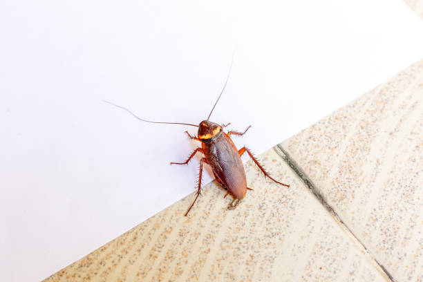
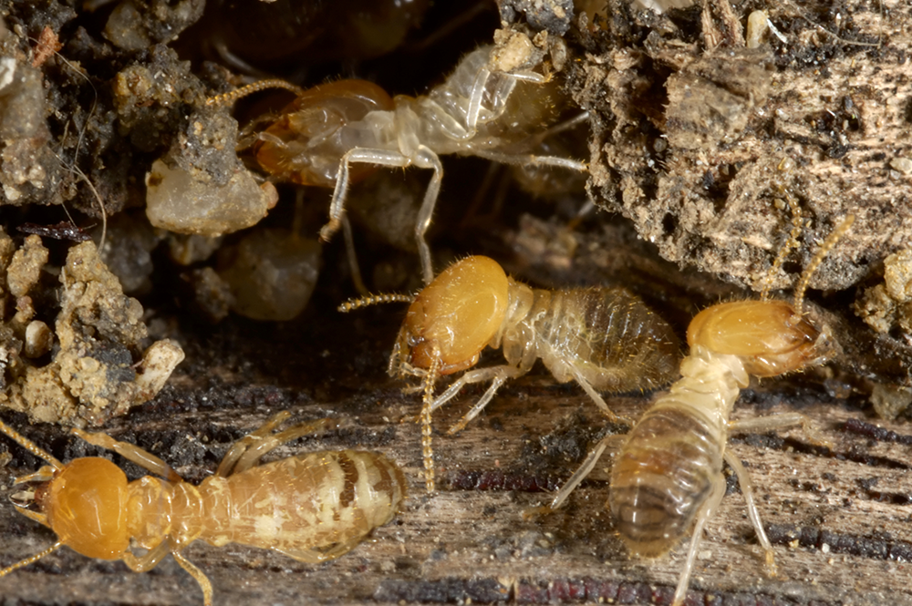

Controle e Eliminação Eficaz de Insetos Urbanos
O clima tropical e a umidade do Rio de Janeiro criam o ambiente ideal para a rápida proliferação de insetos rasteiros e voadores. A presença dessas pragas em residências, condomínios ou estabelecimentos comerciais representa um perigo direto à saúde pública e à conservação do patrimônio.
A Insetcarioca utiliza as metodologias mais avançadas de Manejo Integrado de Pragas (MIP), com produtos químicos modernos de baixíssima toxicidade para humanos e animais, sem cheiro forte e com alto efeito residual prolongado.

Principais Espécies Tratadas
Baratas (Francesinhas e Voadoras)
As Blattella germanica (francesinhas) se abrigam em frestas de armários, fogões e motores elétricos. Já a Periplaneta americana (de esgoto) invade por ralos e tubulações, transportando vírus, bactérias e fungos causadores de gastroenterite, febre tifoide e hepatite.
Cupins (Madeira Seca e Subterrâneo)
Causam prejuízos devastadores e silenciosos em móveis, forros, assoalhos e telhados. Aplicamos descupinização técnica com perfuração precisa, injeção de calda cupinicida sob pressão e barreira química no perímetro estrutural.
Formigas Urbanas
Embora pequenas, as formigas circulam por fezes, lixeiras e feridas antes de pousar em alimentos, sendo grandes carreadoras de micro-organismos patogênicos. Utilizamos géis com feromônios atrativos que eliminam todo o ninho, inclusive as rainhas.
Aranhas e Escorpiões
Aranhas marrons, armadeiras e escorpiões amarelos representam sério perigo de acidentes com veneno tóxico. Efetuamos bloqueios químicos perimetrais em jardins, garagens, pilhas de entulho e ralos prediais.
Percevejos-de-Cama (Bed Bugs)
Se alojam nas costuras de colchões, frestas de estrados e rodapés, alimentando-se de sangue durante a noite e causando dermatites e alergias graves. Exigem tratamento técnico especializado de erradicação profunda.
Pulgas e Carrapatos
Parasitas que atacam animais domésticos e humanos, podendo transmitir verminoses, febre maculosa e outras doenças graves. Tratamento de piso, carpetes e áreas externas com inseticidas de ação residual.

Metodologias de Aplicação
Cada caso exige um diagnóstico prévio para definição da técnica mais segura e eficiente:
-
Aplicação de Gel Inodoro: Ideal para cozinhas, escritórios e residências com crianças, idosos ou pets. Não há necessidade de desocupar o imóvel.
-
Pulverização Líquida Localizada: Aplicação direcionada nos rodapés, ralos, caixas de gordura e áreas perimetrais com inseticidas microencapsulados de longa duração.
-
Polvilhamento Químico: Aplicação de pó seco em tomadas, conduítes e motores de equipamentos onde o uso de líquidos não é permitido.
-
Termonebulização e Atomização: Para áreas abertas, galpões, tubulações de esgoto e forros com alta densidade de infestação.
Certificado de Garantia e Conformidade Legal
Todos os nossos serviços contam com Garantia por Escrito, emissão de Ordem de Serviço, Certificado de Execução de Serviços de Desinsetização e Fichas de Informação de Segurança (FISPQ) dos produtos utilizados.